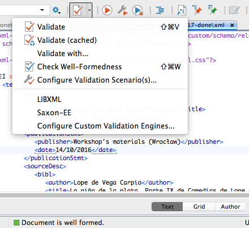
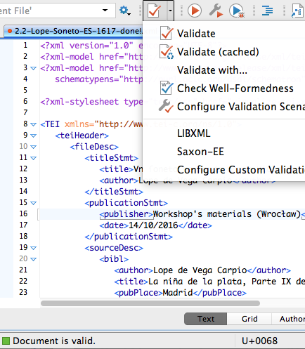
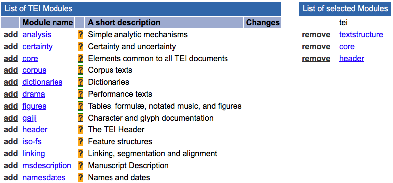
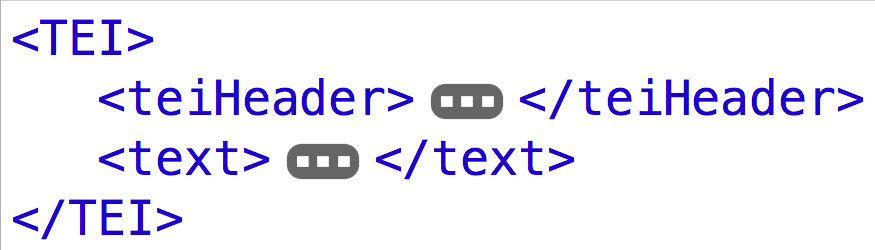
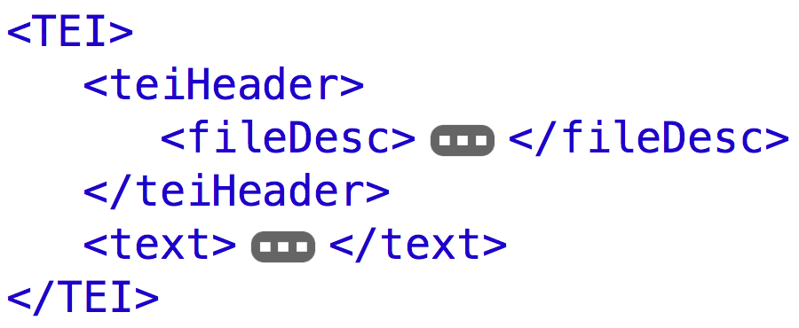
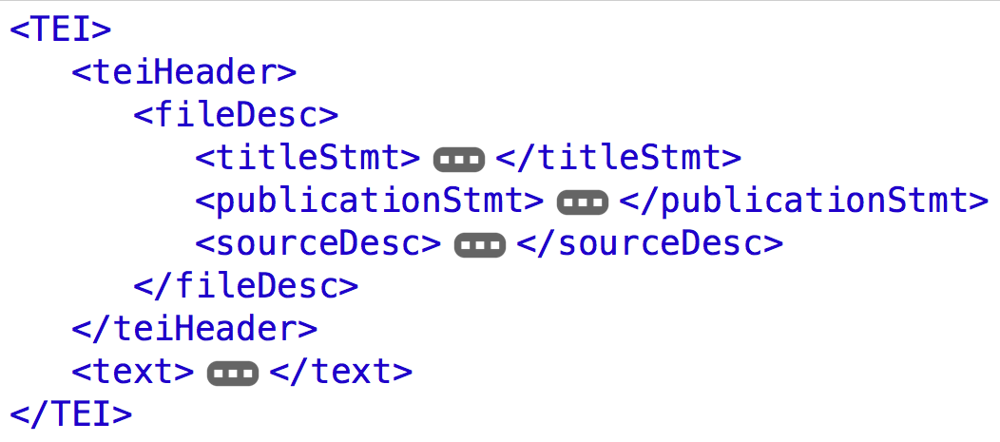
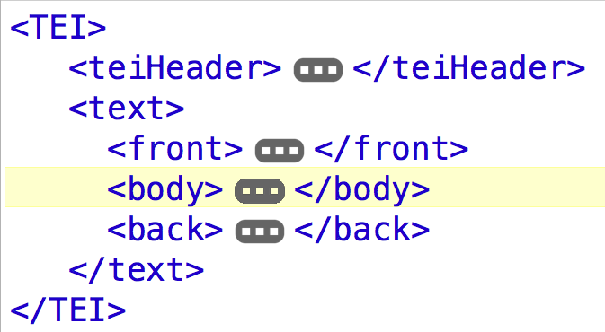
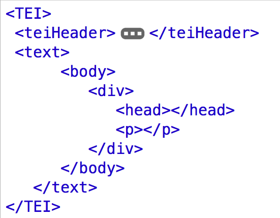
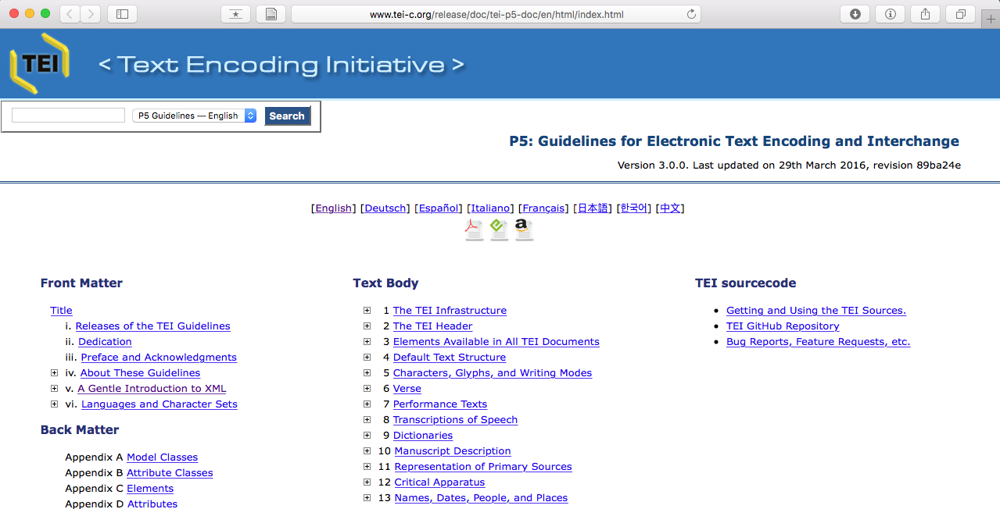
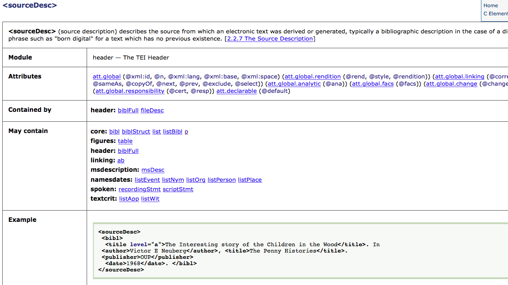

Markup, XML, TEI. Character, structure, guidelines.
☵
Content
- Frontmatter↡(1-2)
- Markup language↡(3-10)
- Text Encoding Initiative↡(11-27)
- TEI Guidelines↡(28-31)
- References↡(32)
- Impressum↡(33)
What is markup language?
- To encode, to tag texts;
- To make explicit (to a machine) what is implicit (to a person);
- To add value by supplying multiple annotations.
XML vs. HTML
- XML is extensible: it does not consist of a fixed set of tags;
- XML documents must be well-formed according to a defined syntax;
- XML documents can be formally validated against a schema;
- XML is more about the meaning of data than about presentation.
Procedural Markup
Descriptive Markup
"Miguel de Cervantes escribió el Quijote"
Procedural
Miguel de Cervantes escribió el Quijote Descriptive
MarkupMiguel de Cervantes escribió el Quijote
Visualizationname {font-weight: bold;} title {font-style: italic;}
Process
XML Golden Rules
An element consists of a start-tag, optional content, and an end-tag. Miguel de Cervantes
An element may have attributes, each consisting of a name and a value. Miguel de Cervantes
An XML document may contain processing instructions or comments.<? xml-stylesheet type="text/css" href="vizualize-tei-xml.css"?>
Elements and attributes are case sensitive. <name> ≠ <Name>
Empty elements can use a minimized tag syntax. <pb/> =
Well-formed (good syntax)

- XML-Version, character set (UTF-8);
- A single root element (first node) contains the XML document;
- Each element is nested within the root element in a hierarchical structure: no overlapping;
- Elements, attributes, etc., are case sensitive;
- Start-tags and end-tags are mandatory;
- Attribute values are quoted.
Valid (against the schema)

- Well-formed;
- Follows a structural definition (schema), e.g. TEI;
- Which elements and attributes are used;
- Which elements and attributes can appear where;
- Names, datatypes, and default values for all attributes.

C. Schöch Digitale Textedition mit TEI (Tutorial)
- Development of markup for texts;
- International standard;
- Interchange of data;
- Platform independence;
- Preservation;
- Research community.
- TEI P5: Version 3.0.0. Last updated on 29th March 2016
Modular system
Each module defines a group of elements and attributes
TEI basic structure
TEI basic structure
<teiHeader>
TEI basic structure
<teiHeader>
Content in the <teiHeader>
Bym złożył sonet, Violente mię prosi
Lope de Vega Carpio
Workshop's materials (Wrocław)
14/10/2016
TEI basic structure
<text>
TEI basic structure
<text>

TEI basic structure
<text>
Content in the <text>
<body>
<head>Do czytelnika</head>
Ani sprawiedliwemu zasady, ani mądremu rady, chociaż nikt ich nie zna w stopniu dostatecznym dla siebie samego.
</body>
Classes of elements
Verse and name annotation
<body>
Bym złożył sonet, <persName>Violente</persName> mię prosi;
nierazem znoił w takowym rygorze:
czternaście wierszów sonet pojąć może.
Trzy z przodka fraszka ze śmiechem unosi.
</body>
Atributtes inside of elements
Provides a unique identifier for any element: @xml:id
Provides a name or number for any element: @n
Specifies the language of any element: @xml:lang
Characterizes the element in some sense: @type
Specifies the visual appearance (rendition): @rend, @style, @rendition Atributtes and elements
<body>
Bym złożył sonet, Violente mię prosi;
nierazem znoił w takowym rygorze:
czternaście wierszów sonet pojąć może.
Trzy z przodka fraszka ze śmiechem unosi.
</body>
Metatextual markup for editions
Enriched with corrections, regularizations, expansions
Groups alternative encodings:
Apparent error:
Corrected error:
Original form:
Regularized form:
Groups alternative encodings:
Apparent error:
Corrected error:
Original form:
Regularized form: Markup for corrections
<body>
Bym złożył sonet,
Violente
Violante
mię prosi;
nierazem znoił w takowym rygorze:
czternaście wierszów sonet pojąć może.
Trzy z przodka fraszka ze śmiechem unosi.
</body>Critical Apparatus, Dictionaries, Manuscript Description, Bibliographies, ...
nearly 500 elements
Guidelines
Information, eg., on an element
Quick look up in the TEI Guidelines.
TEI-Look upTEI Roma (tool)
Generating customizations for the TEI
- possibility to choose your modules;
- possibility to create new elements;
- possibility to generate your schema;
- possibility to generate your documentation.
References
- A Gentle Introduction to XML, Guidelines for Electronic Text Encoding and Interchange, TEI P5: Version 3.0.0.
- digital.humanities @ Oxford, TEI @ Oxford Teaching Pages.
- Lou Burnard (2014), What is the Text Encoding Initiative? How to add intelligent markup to digital resources , Marseille: OpenEdition Press.
- Christof Schöch (2014), Digitale Textedition mit TEI, DARIAH TEI-Tutorial.
José Luis Losada Palenzuela, Markup, XML, TEI. Character, structure, guidelines, <http://editio.github.io/slides/xml-tei>, 2016.
✽